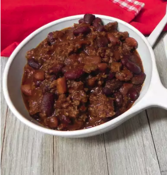

Home
Chili

Description
Chili is a bold, flavorful stew known for its hearty combination of protein, spices, and often beans or vegetables. It is a staple of comfort food, typically characterized by its deep red color and smoky, savory aroma.
Ingredients
- 1 pound lean ground beef
- 1 (15-ounce can) tomato sauce
- 1 (15 ounce) can kidney beans, drained
- 1 (15 ounce) can chili beans, not drained
- 2 tablespoons chili powder, or to taste
- salt and freshly ground black pepper to taste
Steps
- Heat a large skillet over medium-high heat. Cook and stir ground beef in the hot skillet until browned and crumbly, 5 to 7 minutes.
- Stir in kidney beans, chili beans, and tomato sauce. Bring to a boil and stir in chili powder. Reduce heat to a simmer, and cook, stirring occasionally, until thickened, about 15 minutes. Season to taste with salt and pepper.